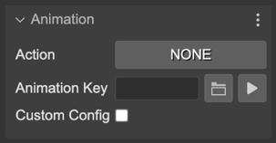
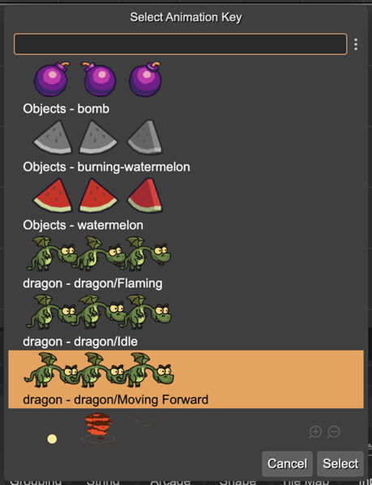
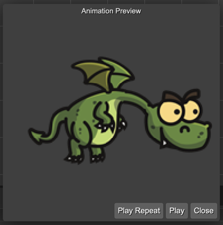
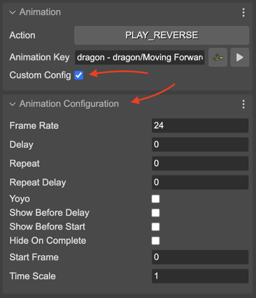

Animation properties
The animation properties section contains the parameters of the play() method of the Sprite game object:
The Action parameter indicates what method execute to play the animation:
NONE (default): Doesn’t call any method, doesn’t play any animation.
PLAY: Calls the play() method.
PLAY_REVERSE: Calls the playReverse() method.
The Animation Key parameter contains the key of the animation to play:
Next to the key name, there are two buttons. A button for opening an animation key selection dialog and a button for previewing the selected animation.
The animation key selection dialog:
The animation preview dialog:
This dialog searches for animations defined in a Phaser animations file or in the Aseprite assets included in an Asset Pack file.
This is the code the scene compiler generates for playing the animation:
dragon.play("dragon - dragon/Moving Forward");
Or, if you select the PLAY_REVERSE action:
dragon.playReverse("dragon - dragon/Moving Forward");
When you define the animations in the Animations Editor or in Aseprite, you configure parameters like repetitions, duration, direction, etc… However, in the scene, you can pass a custom configuration to the play() method. To do this in the Scene Editor you have to check the Custom Config parameter.
If the Custom Config parameter is selected, then it shows the Animation Configuration section. It shows all the parameters you can set to an animation:
When you set the custom configuration, the scene compiler generates this code:
dragon.play({
"key": "dragon - dragon/Moving Forward"
"frameRate": 10,
"repeat": -1
});